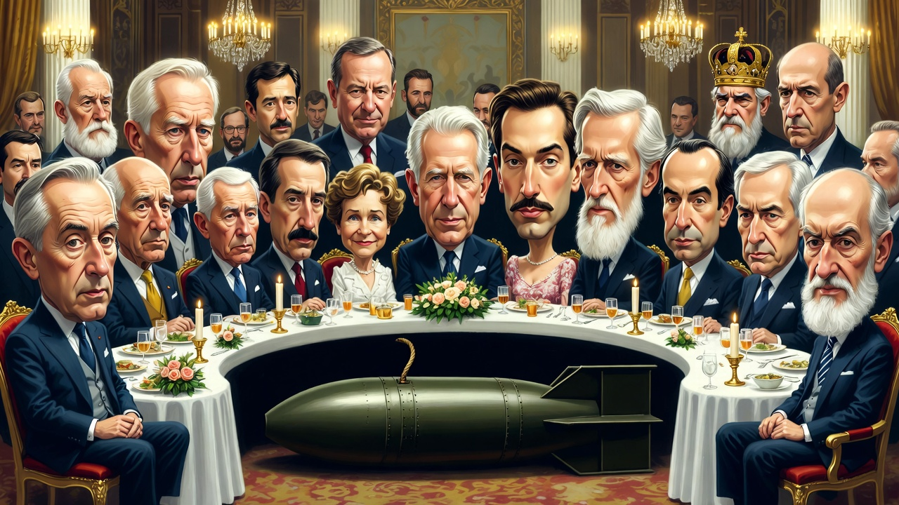

About You
They are all there. The kings, the bankers, the oligarchs, the presidents, the puppet masters. Laughing, toasting, dividing the world at their golden table.
Underneath them? A bomb. A massive, ancient nuclear bomb. The fuse is already there — long, dry, ready. One spark, and the whole rotten banquet ends.

The fuse is lit. The table is set. The question is simple.
Who are you?
Just another passerby who glances, shrugs, mutters “someone else will do it”, and walks away — leaving the match on the ground?
Or the one who finally understands: this is not a spectator sport.
This is the moment. The system is fragile, exposed, arrogant. The fuse is ready. You have the match in your hand.
Or will you keep complaining in the dark?
Join the assemblies. Build the alternative. Light the fuse.
Democraticus is not waiting for permission.
And neither should you.
→ Go to Assemblies — start today.
→ Or stay in the crowd, watching the table burn... from a safe distance.